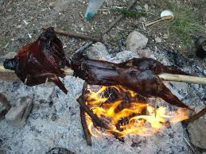
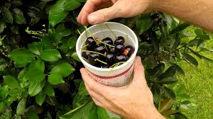
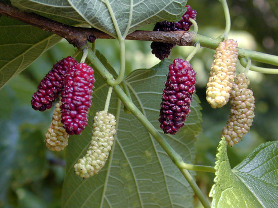
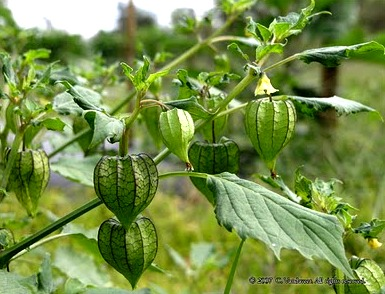
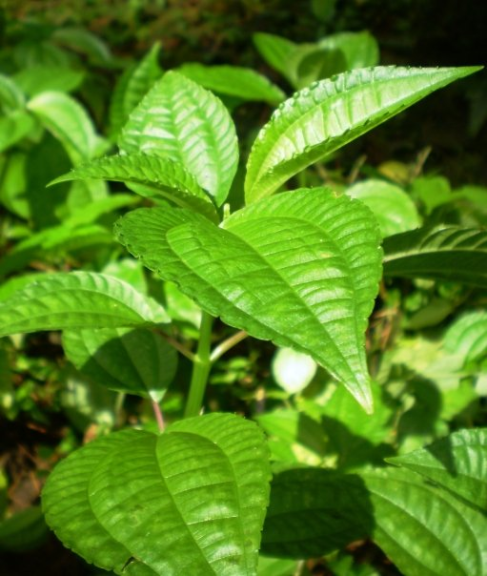

Makanan
Salah satu penunjang bagi perlindungan tubuh yang berasal dari dalam adalah, makanan yang dibutuhkan untuk menambah kalori, memberi tenaga pada otot dan mengganti sel-sel atau jaringan yang rusak, makanan sangatlah penting untuk memasok kehangatan dan tenaga, serta untuk pemulihan setelah bekerja keras, terluka atau sakit. 70 kalori perjam sangat dibutuhkan tubuh hanya untuk bernafas dan melakukan gerakan dasar tubuh. sumber makanan dapat kita peroleh dari tumbuhan dan hewan didaerah sekitar kita.
Makanan dari hewan
Makanan yang bersumber dari hewan yang terutama yang dibutuhkan adalah kandungan lemak dan proteinnya. Golongan-golongan hewan yang dapat dimanfaatkan sebagai sumber makanan antara lain yaitu:
1. Binatang lunak (jenis cacing)
2. Serangga
3. Reptil
4. Unggas
5. Binatang bertulang belakang
kesulitan terbesar dalam memanfaatkan hewan sebagai pengganjal perut adalah saat penangkapan jangan sampai usaha untuk mendapatkannya menjadi terlalu melelahkan yang berakibat membuat kita putus asa. Dalam menangkap binatang usahakan untuk menangkap yang lebih kecil terlebih dahulu, kecuali apabila kita memang mempunyai kesempatan untuk menangkap binatang yang lebih besar. Proses penyajian hewan spesies kecil lebih mudah. Hewan yang bisa dimakan lebih banyak jumlahnya daripada yang tidak bisa dimakan.
Makanan dari tumbuhan
Tumbuh-tumbuhan terutama memberikan karbohidrat dan juga seratnya memperlancar pencernaan. Harus diperhatikan, dalam survival keadaan kita harus memakan sedikit demi sedikit tumbuhan yang tidak umum. Oleh karena itu, dianjurkan untuk tidak memakan hanya satu jenis tumbuhan saja.
Hampir seluruh tumbuhan hutan dapat dimanfaatkan oleh manusia dan ribuan tumbuhan dapat dimakan. Meskipun demikian, tidak sedikit yang justru membahayakan manusia. Secara garis besar, tumbuh-tumbuhan ini dibedakan menjadi:
1. Tumbuhan yang berguna (tidak berbahaya)
(dapat dimakan, mengandung air dan dapat dipakai sebagai obat dan sebagainya.)
2. Tumbuhan yang berbahaya (beracun)
Permasalahan dalam survival mengenai masalah botani dan zoologi praktis adalah survivor harus mengenali karakteristik alamnya, karena daerah indonesia ini dapat dikelompokan menjadi beberapa zona geografis tumbuhan. Kita bersuvival diindonesia barat tentu akan lain dengan bila kita menjumpai hutan-hutan di Nusa Tenggara Timur. Ada daerah yang memiliki rawa yang luas dimana tumbuhan yang ada sangat khas.
berikut contoh tumbuhan yang dapat dimakan :
1. Cantigi (Vaccinium Faringiaefolium)
pohon kecil ini sering kita jumpai kalo kita hiking ke gunung. bagian tumbuhan ini dapat kita makan pada ujung daunnya yg berwarna merah. rasanya asam kecut seperti buah belimbing rasanya yg segar lumayan membuat tenggorokan kita puas jika kita kehausan pada saat perjalanan di gunung.
2. Murbai/Bebesaran (Morus)

nah ini adalah buah yang menyegarkan tenggorokan. permukaan buah ini mirip dengan stroberi. buah yang hidup di suhu dingin ini manis ( jika sudah matang ) tapi biarpun yang masih muda terasa kecut tapi tetap saja rasanya segar.
3. Ciplukan/Cecendet/Ceplukan/ (Physallis peruviana L)

buah yang rasanya manis ini dapat kita temukan di daerah yg terbuka. karena buah ini banyak membutuhkan sinar matahari. buah ini tertutup bungkus berbentuk kuncup sebesar kelereng. ternyata buah ini dapat mengobati penyakit seperti penyakit paru-paru basah dan sakit perut.
4. Begonia
tumbuhan ini banyak terdapat di hutan hujan tropis. banyak dijumpai di gunung Raung. dapat dimakan pada batangnya. rasanya asam asam belimbing sayur.
5. Poh pohan

namanya poh-pohan, rasanya emang agak pahit tapi kalo dipake buat lalapan atau sayuran ajiiib deh rasanya. sering ditemuin di sekitar lembahan , pohonnya pendek tapi awas jangan salah petik , kalo ini daun wanginya harum.